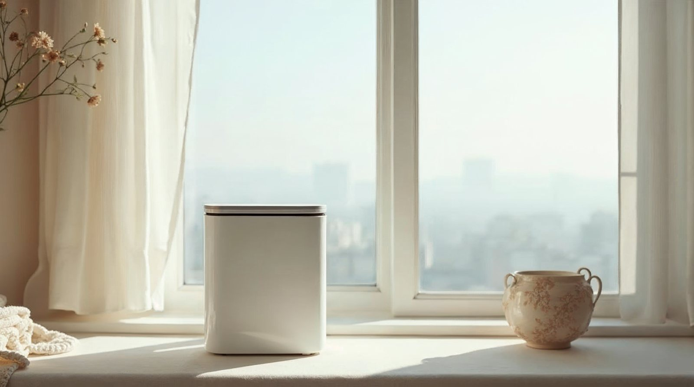
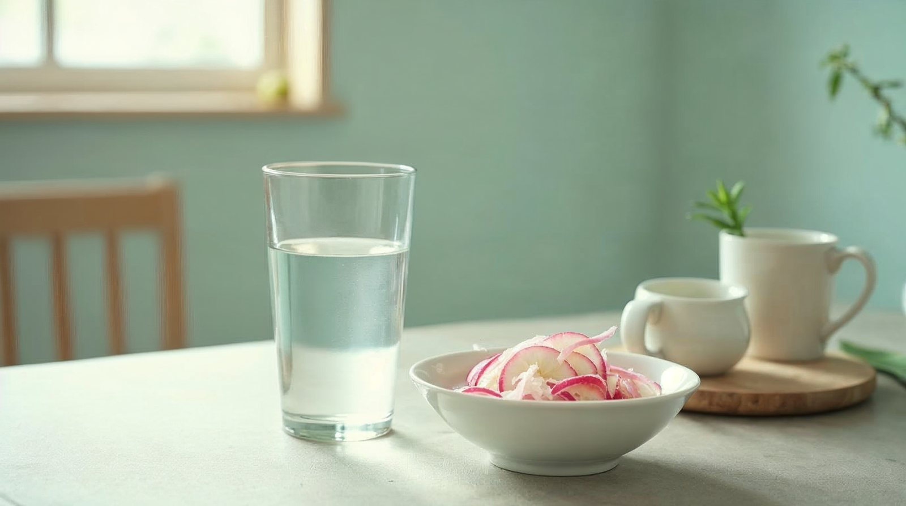
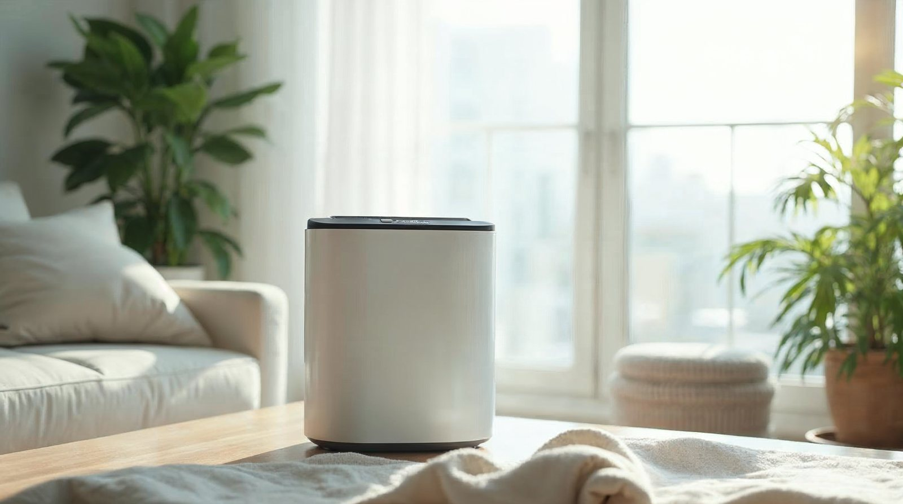
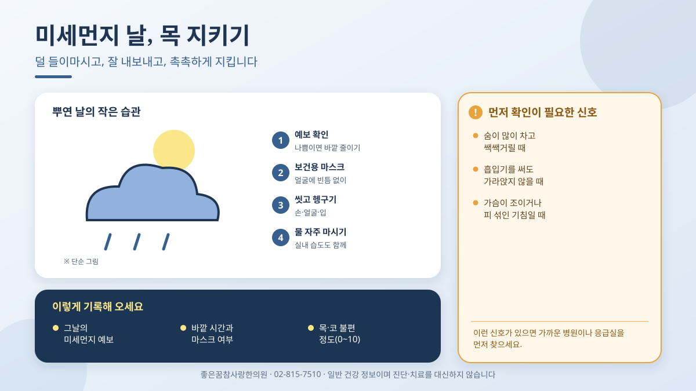

이종호 한의사 감수좋은꿈참사랑한의원 대표원장 (한의사 면허번호 19769)발행 2026-11-26 · 수정 2026-11-27
이 글의 차례
아침에 휴대폰을 열어 보니 미세먼지 '매우 나쁨'이 빨갛게 떠 있어요. 창밖 하늘은 뿌옇고, 멀리 있는 아파트가 희미하게 보이죠. 출근길 몇십 분을 걸었을 뿐인데 사무실에 도착하니 목이 칼칼하고 따끔거리며, 자꾸 헛기침이 나옵니다.
봄과 늦가을, 겨울에는 진료실에서 이런 말씀을 자주 들어요. "미세먼지 심한 날은 목이 먼저 알아요." "기침이 나서 마스크를 쓰면 답답하고, 벗으면 목이 따가워요." 코가 막히고 눈이 가려우며, 머리까지 무겁다고 하시는 분도 많거든요.
그날 목이 칼칼한 건 몸이 제 할 일을 하고 있다는 뜻이기도 해요. 미세먼지는 눈에 잘 보이지 않을 만큼 작은 알갱이라 코와 목을 지나 기관지 깊숙이 들어갈 수 있는데, 코와 목이 그걸 막아 보려고 예민하게 반응하는 거거든요.
저는 여기서 둘을 나눠서 봐요. '먼지 많은 날에만 칼칼한 목'과 '평소에도 예민하던 목이 그날 더 힘든 것'은 다른 얘기예요. 대부분은 하루 이틀 지나면 가라앉지만, 비염이나 천식, 만성 기관지 질환이 있는 분, 어린이와 어르신은 훨씬 크게 영향을 받아요. 오늘은 미세먼지가 몸에 어떤 자극을 주는지, 그날을 어떻게 보내면 좋은지 정리해 볼게요.
미세먼지 날 목과 코는 어떻게 반응하나요?
가장 먼저 느껴지는 것은 목이 칼칼하고 따끔거리는 느낌입니다. 목 안에 무언가 걸린 것 같아 헛기침이 잦아지고, 마른기침이 이어지기도 합니다. 목이 마르고 목소리가 잠기는 분도 있습니다.
코에서는 코막힘과 재채기, 맑은 콧물이 생기고, 코 안이 마르며 따끔거리기도 합니다. 눈이 가렵고 충혈되며 뻑뻑해지는 분도 많습니다. 이럴 때 눈을 손으로 비비면 자극이 더 커지니, 인공눈물로 씻어 내듯 넣어 주시는 편이 좋습니다. 피부가 예민한 분은 얼굴이 따갑거나 가려워지기도 합니다.
미세먼지가 많은 날이 며칠 이어지면 머리가 무겁고 개운하지 않으며, 쉽게 피곤해진다고 말씀하시는 분도 있습니다. 코가 막혀 입으로 숨을 쉬게 되면 잠이 얕아지고, 목은 더 쉽게 마릅니다. 코는 들이마신 공기를 데우고 촉촉하게 만들어 주는 곳이라, 입으로 숨을 쉬면 거르지 못한 차고 마른 공기가 그대로 목에 닿게 됩니다.
왜 미세먼지 날에는 목이 따갑고 기침이 날까요
우리 코와 목, 기관지는 끈끈한 점액과 아주 작은 털로 덮여 있어서, 숨을 쉴 때 들어오는 먼지를 붙잡아 밖으로 내보냅니다. 그런데 미세먼지는 알갱이가 매우 작아서 이 거름망을 지나 기관지 깊은 곳까지 들어가기 쉽습니다.
미세먼지 알갱이에는 자동차 배기가스, 공장 연기, 난방 연소에서 나온 여러 물질이 붙어 있습니다. 이 물질들이 점막에 닿으면 점막이 자극을 받아 붓고 예민해지며, 이를 내보내려고 기침과 콧물, 재채기가 생깁니다. 목이 칼칼하고 따끔한 것도 이런 자극 반응입니다.
미세먼지가 많은 날은 대개 공기가 건조하고 바람이 약한 날입니다. 건조한 공기에 점막이 마르면 먼지를 걸러 내는 힘이 더 약해지고, 작은 자극에도 기침이 쉽게 터집니다. 겨울과 봄에 미세먼지 날 목이 더 힘든 것도 이 때문입니다.
비염이 있는 분은 코 점막이 이미 예민해 있어서 미세먼지에 더 크게 반응합니다. 천식이나 만성 기관지 질환이 있는 분은 기관지가 좁아지며 숨이 차거나 쌕쌕거리는 소리가 날 수 있어서 특히 조심해야 합니다.
한의학에서는 바깥의 나쁜 기운이 코와 목, 폐로 들어와 점막을 마르고 예민하게 하는 모습을 폐가 바깥 자극을 받은 상태로 설명해 왔습니다. 진찰에서 쓰는 전통적인 표현이고 따로 진단명은 아니지만, 코와 목을 지키고 촉촉하게 유지하는 일이 중요하다는 점을 잘 보여 주는 시각입니다.

감기나 비염과는 어떻게 다를까요?
미세먼지 날의 목 칼칼함은 대개 열이 없고, 공기가 맑아지면 하루 이틀 사이에 가라앉는 흐름을 보입니다. 미세먼지 예보와 목 상태를 함께 적어 보면 그 연결이 잘 보입니다. 같은 날 가족이나 동료도 비슷하게 목이 따갑다고 한다면 더욱 그렇습니다.
감기는 바이러스 감염이라 열이나 몸살이 함께 오고, 목이 붓고 아프며, 콧물이 진해지는 흐름이 있습니다. 미세먼지가 많은 날 감기에 걸리기 쉬운 것도 사실이어서, 두 가지가 겹치기도 합니다.
알레르기 비염은 미세먼지가 없는 날에도 아침마다 재채기와 맑은 콧물, 코막힘이 반복되고, 꽃가루나 집먼지진드기 같은 특정 원인에 반응합니다. 미세먼지는 이런 비염을 더 심하게 만드는 계기가 되기도 합니다.
미세먼지가 없는 날에도 기침이 3주 넘게 이어진다면 미세먼지만의 문제가 아닐 수 있습니다. 이럴 때는 호흡기내과나 이비인후과 검사를 먼저 받아 보시길 권합니다.
미세먼지에 더 조심해야 하는 분들
어린이는 어른보다 몸집에 비해 숨을 많이 쉬고, 바깥에서 뛰어노는 시간이 길어 미세먼지를 더 많이 들이마십니다. 어르신은 기관지와 심장의 힘이 약해져 있어 같은 미세먼지에도 영향을 크게 받으실 수 있습니다.
천식, 만성 기관지 질환, 심장 질환이 있는 분, 임신 중인 분도 미세먼지 날에는 바깥 활동을 줄이고 몸 상태를 더 세심히 살피셔야 합니다. 이런 분들은 미세먼지 날 지켜야 할 것을 담당 선생님과 미리 상의해 두시면 좋습니다.
바깥에서 일하시는 분, 도로 가까이에서 오래 지내시는 분, 담배를 피우시는 분도 기관지가 받는 부담이 큽니다. 흡연은 미세먼지와 겹쳐 기관지를 더 예민하게 만들 수 있어서, 금연을 함께 상의해 보시길 권합니다.
먼저 이렇게 여쭙니다
처음 오시면 대략 이런 순서로 여쭙니다. 미리 떠올려 오시면 이야기가 수월해집니다.
- 미세먼지 많은 날에만 불편한가요, 평소에도 있는데 더 심해지나요?
- 기침은 마른기침인가요, 가래가 있나요?
- 코막힘, 재채기, 콧물, 눈 가려움이 함께 있나요?
- 숨이 차거나 쌕쌕거리는 소리가 나지는 않나요?
- 비염, 천식, 아토피 같은 알레르기 질환이 있나요?
- 하루 중 바깥에 있는 시간은 어느 정도인가요?
- 쓰고 계신 약이나 흡입기, 담배는 어떠신가요?
정확히 기억나지 않으셔도 괜찮습니다. '미세먼지 나쁨인 날 출근하고 나면 오후까지 목이 따갑다'처럼 흐름만 말씀해 주셔도 충분합니다.

일상에서 먼저 해 볼 수 있는 것
미세먼지 날에는 들이마시는 양을 줄이고, 들어온 것을 잘 내보내며, 점막을 촉촉하게 지키는 것이 기본입니다.
- 외출 전 미세먼지 예보를 확인하고, 나쁨 이상인 날은 바깥 활동 줄이기
- 외출할 때는 얼굴에 잘 맞는 보건용 마스크(KF 표시) 쓰기
- 집에 돌아오면 손과 얼굴을 씻고, 미지근한 물로 입을 헹구기
- 미지근한 물을 하루 동안 조금씩 자주 마시기
- 생리식염수로 코를 가볍게 세척하기(코 세척이 처음이면 방법을 먼저 익히기)
- 실내 공기청정기를 쓰고, 습도는 40~60%로 맞추기
마스크는 얼굴에 빈틈 없이 맞아야 제 역할을 합니다. 코 부분의 철사를 눌러 코에 밀착시키고, 턱까지 덮어 주세요. 숨쉬기가 많이 답답하거나 호흡기 질환이 있는 분, 어린아이는 무리하게 쓰기보다 바깥 활동 자체를 줄이는 쪽이 좋습니다.
물은 점막을 촉촉하게 유지해 먼지를 걸러 내고 내보내는 힘을 돕습니다. 미지근한 물을 몇 모금씩 자주 드시고, 커피와 술은 몸의 물을 빼내니 미세먼지 날에는 조금 줄여 보세요. 따뜻한 보리차나 둥굴레차처럼 카페인이 없는 차를 곁에 두시면 물 마시기가 한결 수월합니다.
미세먼지가 많은 날에도 실내 환기를 아예 하지 않으면 실내 공기가 오히려 탁해질 수 있습니다. 미세먼지가 조금 덜한 시간대에 짧게 창문을 열어 환기하고, 요리를 한 뒤에는 주방 환풍기를 켜 주세요.
미세먼지 날 운동과 산책은 어떻게 할까요?
꾸준히 걷거나 운동하시는 분들은 미세먼지 날이 고민입니다. 운동을 하면 숨을 깊고 빠르게 쉬게 되어, 같은 시간 동안 들이마시는 공기의 양이 크게 늘어납니다. 그래서 미세먼지가 나쁨 이상인 날에는 바깥 운동을 실내 운동으로 바꾸시길 권합니다.
실내에서는 계단 오르내리기, 제자리걸음, 맨몸 근력 운동, 스트레칭처럼 할 수 있는 것이 생각보다 많습니다. 운동의 흐름을 끊지 않는 것이 중요하니, 미세먼지 날을 위한 실내 운동 몇 가지를 미리 정해 두시면 좋습니다.
보통 수준의 날에 바깥을 걸으신다면 차가 많이 다니는 큰 도로보다 공원이나 골목길을 택하고, 출퇴근 시간처럼 차량이 몰리는 때는 피해 주세요. 걷고 돌아온 뒤에는 손과 얼굴을 씻고 물을 한 컵 드시는 것을 잊지 마세요.
아이들은 미세먼지 날에도 뛰어놀고 싶어 합니다. 이런 날은 실내 놀이터나 집 안에서 몸을 쓰는 놀이로 대신하고, 학교나 어린이집의 바깥 활동 여부도 함께 확인해 주시면 좋습니다.

집 안을 미세먼지 쉼터로
미세먼지가 많은 날 가장 오래 머무는 곳은 집과 사무실입니다. 그래서 실내 공기를 관리하는 것이 바깥 공기를 피하는 것만큼 중요합니다.
공기청정기는 필터를 제때 갈아 주어야 제 힘을 냅니다. 사용 설명서에 적힌 교체 주기를 지키고, 잠자는 방에 한 대를 두시면 밤 동안 코와 목이 쉬는 데 도움이 됩니다.
바닥과 가구의 먼지는 마른 걸레보다 물걸레로 닦는 것이 좋습니다. 마른 걸레질이나 털기는 가라앉은 먼지를 다시 공기 중으로 날리기 쉽습니다. 외출했다 들어오면 겉옷은 현관에서 벗어 두고, 털어야 한다면 바깥에서 털어 주세요.
실내에서 고기를 굽거나 튀김을 하면 미세먼지가 크게 늘어납니다. 이런 요리를 할 때는 환풍기를 켜고, 요리를 마친 뒤 짧게라도 환기해 주시는 것이 좋습니다. 실내에서 촛불이나 향을 오래 피우는 것도 공기를 탁하게 할 수 있습니다.
한의원에서 함께 살필 수 있는 경우
- 미세먼지 많은 날마다 목이 칼칼하고 마른기침이 이어지는 경우
- 비염이 있어 미세먼지 날 코막힘과 재채기가 유난히 심해지는 경우
- 미세먼지 날이 지나도 목 불편과 헛기침이 오래 남는 경우
- 코가 막혀 입으로 숨을 쉬며 잠이 얕아지는 경우
- 목과 코, 피부가 함께 건조해지고 쉽게 피로해지는 경우
좋은꿈참사랑한의원에 오시면 먼저 아래 '먼저 확인이 필요한' 신호가 없는지부터 봅니다. 그다음 맥을 짚고, 목과 코, 혀의 상태를 살피며 잠과 물 마시는 습관, 바깥 활동 시간을 함께 여쭙습니다.
진찰 내용을 바탕으로 생활에서 바꿔 볼 것 하나와 함께 침, 한약 상담 가운데 지금 상태에 맞는 것을 정합니다. 한약을 상의할 때는 드시는 약을 모두 확인하고 신중하게 정하며, 임신 중이시거나 가능성이 있다면 먼저 알려 주세요. 산부인과 선생님과 상의하는 것이 우선입니다.
천식이나 비염으로 흡입기나 약을 쓰고 계시다면 상의 없이 멈추지 않습니다. 한의원 진료는 호흡기내과, 이비인후과 진료와 나란히, 목과 코가 미세먼지 계절을 덜 힘들게 지나도록 함께 살피는 쪽으로 갑니다.
이렇게 기록해 오시면 상담이 쉬워집니다
2~3주 정도 간단히 적어 보시면 미세먼지와 몸의 연결이 눈에 보입니다.
- 그날의 미세먼지 예보(좋음, 보통, 나쁨, 매우 나쁨)
- 바깥에 있었던 시간과 마스크를 썼는지
- 목 칼칼함, 기침, 코막힘, 눈 가려움의 정도(0~10)
- 가래의 유무와 색
- 마신 물의 양과 실내 습도
- 잠의 깊이와 밤에 깬 횟수
기록을 보시면 미세먼지가 나쁜 날보다 마스크 없이 오래 걸은 날, 물을 적게 마신 날 목이 더 힘들었다는 식의 나만의 흐름이 보이기도 합니다.
뿌연 날을 조금 덜 힘들게
미세먼지는 혼자 피하기 어려운 환경의 문제예요. 하늘을 맑게 해 드릴 수는 없지만, 내 코와 목이 받는 부담은 작은 습관으로 조금씩 줄일 수 있거든요.
코와 목의 예민함을 살피는 건 제가 할게요. 대신 하나만 부탁드려요. 밖에서 돌아오면 손과 얼굴을 씻고 입을 한 번 헹궈 주세요. 하루 동안 묻어 온 먼지를 집 안까지, 잠자리까지 끌고 들어가지 않는 거예요. 딴 건 지금처럼 편하게 하셔도 돼요.
다음에 오시면 기록을 함께 펼쳐 보며 목이 편했던 날의 공통점을 같이 찾아볼게요. 미세먼지 계절은 해마다 돌아오니, 올해 찾은 나만의 방법이 내년을 준비하는 바탕이 돼요. 궁금한 건 그냥 편하게 물어보세요.
이런 증상은 먼저 확인이 필요합니다
- 숨이 많이 차고 쌕쌕거리는 소리가 나며 흡입기를 써도 가라앉지 않는 경우
- 가슴이 조이듯 아프거나 기침과 함께 피가 섞여 나오는 경우
이런 신호가 있으면 한의원보다 가까운 병원이나 응급실을 먼저 찾으세요.
함께 읽으면 좋은 글
- 미세먼지 많은 날 목이 따갑고 기침이 날 때는 어떻게 지내면 좋을까요?
- 환절기 아침에 공원을 걷고 나면 재채기와 맑은 콧물이 쏟아질 때는 어떻게 살피나요?
- 환절기에 목이 건조하고 칼칼할 때는 어떻게 관리하나요?
- 아침마다 재채기와 콧물이 심할 때는 어떤 점을 살펴보나요?
- 콧물이 목 뒤로 넘어가 자꾸 헛기침이 나는 후비루는 왜 생기고 어떻게 살피나요?

여쭙는 것
- 미세먼지 많은 날에만 불편한가요, 평소에도 있는데 더 심해지나요?
- 기침은 마른기침인가요, 가래가 있나요?
- 코막힘, 재채기, 콧물, 눈 가려움이 함께 있나요?
생활에서 해 볼 것
- 외출 전 미세먼지 예보를 확인하고, 나쁨 이상인 날은 바깥 활동 줄이기
- 외출할 때는 얼굴에 잘 맞는 보건용 마스크(KF 표시) 쓰기
- 집에 돌아오면 손과 얼굴을 씻고, 미지근한 물로 입을 헹구기
한의원에서 함께 살필 것
- 미세먼지 많은 날마다 목이 칼칼하고 마른기침이 이어지는 경우
- 비염이 있어 미세먼지 날 코막힘과 재채기가 유난히 심해지는 경우
- 미세먼지 날이 지나도 목 불편과 헛기침이 오래 남는 경우
먼저 확인이 필요한 신호
- 숨이 많이 차고 쌕쌕거리는 소리가 나며 흡입기를 써도 가라앉지 않는 경우
- 가슴이 조이듯 아프거나 기침과 함께 피가 섞여 나오는 경우
한눈에 보는 표
| 구분 | 핵심 |
|---|---|
| 여쭙는 것 | 미세먼지 많은 날에만 불편한가요, 평소에도 있는데 더 심해지나요? 기침은 마른기침인가요, 가래가 있나요? |
| 생활에서 해 볼 것 | 외출 전 미세먼지 예보를 확인하고, 나쁨 이상인 날은 바깥 활동 줄이기 외출할 때는 얼굴에 잘 맞는 보건용 마스크(KF 표시) 쓰기 |
| 한의원에서 함께 살필 것 | 미세먼지 많은 날마다 목이 칼칼하고 마른기침이 이어지는 경우 비염이 있어 미세먼지 날 코막힘과 재채기가 유난히 심해지는 경우 |
| 먼저 확인이 필요한 신호 | 숨이 많이 차고 쌕쌕거리는 소리가 나며 흡입기를 써도 가라앉지 않는 경우 가슴이 조이듯 아프거나 기침과 함께 피가 섞여 나오는 경우 |
자주 묻는 질문
미세먼지 날 마스크는 어떤 것을 써야 하나요?
KF 표시가 있는 보건용 마스크를 얼굴에 빈틈 없이 맞게 쓰시길 권합니다. 숨쉬기가 많이 답답하거나 호흡기 질환이 있다면 무리하게 쓰기보다 바깥 활동을 줄이는 쪽이 좋습니다.
미세먼지 날에는 창문을 아예 열면 안 되나요?
환기를 아예 하지 않으면 실내 공기가 탁해질 수 있습니다. 미세먼지가 조금 덜한 시간대에 짧게 환기하고, 공기청정기를 함께 쓰시길 권합니다.
코 세척이 미세먼지 날에 도움이 되나요?
생리식염수로 코를 가볍게 씻어 내면 코 안에 붙은 먼지를 내보내는 데 도움이 될 수 있습니다. 처음 하신다면 방법을 먼저 익히시고, 귀가 먹먹해질 만큼 세게 하지는 마세요.
아이가 미세먼지 날 기침을 하는데 어떻게 하나요?
바깥 활동을 줄이고, 집에 오면 손과 얼굴을 씻기며 물을 자주 주세요. 기침이 며칠 이어지거나 숨이 차 보이면 소아청소년과 진료를 먼저 받아 보세요.
미세먼지 때문에 목이 안 좋은데 한약을 먹어도 되나요?
진찰을 해 보고 지금 상태에 맞는지 먼저 살핍니다. 드시는 약을 모두 확인하고 신중하게 상의해서 정하며, 천식이나 비염 약은 상의 없이 멈추지 않습니다.
좋은꿈참사랑한의원은 재진 때 지난번 이야기부터 이어서 여쭙니다. 진료시간과 예약은 오시는 길에서 확인하세요.
어디서 상담받을 수 있나요?
좋은꿈참사랑한의원은 서울 동작구 만양로2길 2 신성빌딩 3층·5층(서울 동작구 상도동, 7호선 상도역 3번 출구 근처)에 있습니다. 한의사 3명(이종호 대표원장, 조영기 수석진료원장, 정원영 진료원장)이 진료합니다. 진료시간은 평일 09:30~20:00(점심 13:00~14:00), 토·일·공휴일 09:30~15:00이며, 방문 전 전화로 확인을 권합니다. 예약은 네이버 예약, 카카오톡 상담, 전화 02-815-7510로 받습니다.
이 글은 일반적인 건강 정보이며 개인의 진단이나 치료를 대신하지 않습니다. 증상이 있거나 복용 중인 약이 있다면 진료를 통해 확인하세요. 치료 효과는 개인마다 다를 수 있습니다.
작성 기준: 일반적으로 알려져 있는 건강 정보를 참고해 정리했습니다(대표원장 감수). 증상 기록은 1~2주 동안 하루 1회, 비슷한 시간에 적어 오시면 지난 상태와 비교하기 쉽습니다.